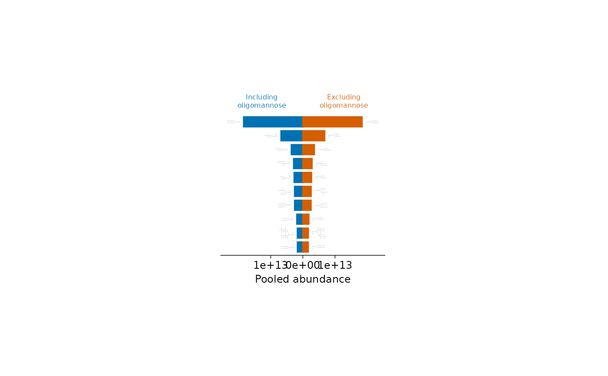

Top ten glycans by site-specific glycoform count or abundance
plot_top10_bar.RdDraw mirrored horizontal bars with glycan cartoons at their outer ends. The left side includes oligomannose; the right side excludes it. Each side independently selects up to ten glycans, ranked from highest to lowest from top to bottom, on a shared quantitative scale.
Arguments
- x
A
glyexp::GlycoproteomicSE()withglycan_structure,protein, andprotein_siterow annotations andglycan_type = "N"in metadata. Glycomics, plainSummarizedExperiment, and legacy containers are rejected.- weight
Either
"equal"(default), counting distinct combinations of protein, site, and glycan structure, or"abundance", summing linear-scale glycoform abundances across all rows and samples. Duplicate measurements count once in equal mode and contribute their summed abundance otherwise.- ...
Common appearance options in glyvis_plot_options. The plot area uses the tidyplots default (50 by 50 mm). The first two default glyvis colours identify the left and right sides. Cartoon sizes adapt to the plot dimensions supplied here. No title is added unless
titleis supplied.
Value
A tidyplot, also inheriting from ggplot. Its data contains
glycan_structure, type, value, side, and rank. Values are always
non-negative; signed_value gives their mirrored plotting coordinates.
Details
Classification uses glydet::n_glycan_type() with merge_mannose = TRUE:
oligomannose includes paucimannose and high-mannose. Missing structures and
structures without an N-glycan core are excluded with a warning; invalid
structures or ambiguous classifications raise an error.
Ties are resolved by canonical structure string. If fewer than ten glycans
are available, all are shown; an empty right side is labelled explicitly.
Equal weighting uses annotations regardless of zero or missing abundance. Abundance weighting requires non-negative finite values on a recorded raw scale (missing scale metadata is treated as raw). Missing values are omitted; all-zero or entirely missing eligible abundance raises an error. No sample-wise normalization is applied.
Examples
if (all(vapply(c("glydet", "glydraw", "glymotif", "glyparse", "glyrepr"),
requireNamespace, logical(1), quietly = TRUE))) {
plot_top10_bar(glyexp::real_experiment)
plot_top10_bar(glyexp::real_experiment, weight = "abundance")
}
